Функционалността за случаен избор на друг съдия във ВКС е приложима само за Върховен касационен съд и се достъпва от потребители с роля Ръководство и роля Управление на дела в комбинация с роля Администратор или роля Ръководство.
В меню Съдебни дела е добавено подменю Избор на разследващ/наблюдаващ съдия.
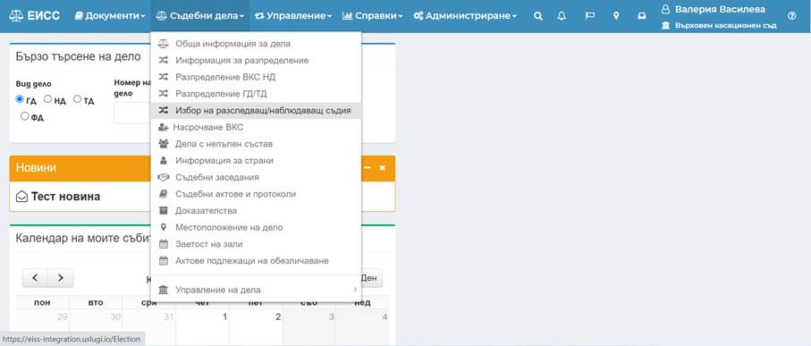
При избор на подменюто се отваря диалогов прозорец, от който чрез избор на бутон Добави, потребителят добавя нова сесия.
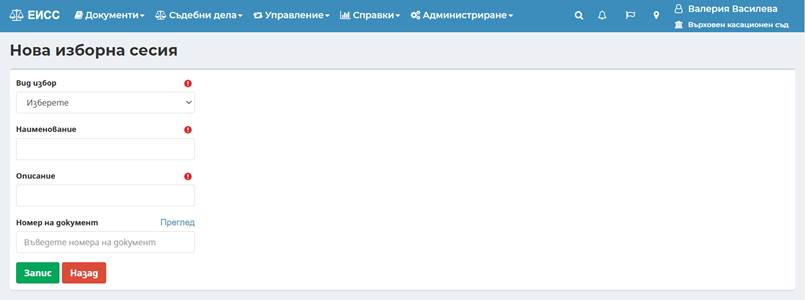
· Поле Вид избор – избор от номенклатура между две опции – „Разследващ прокурор“ и „Наблюдаващ прокурор“;
· Поле Наименование – текстово поле за добавяне на име на съответната сесия;
· Поле Описание – текстово поле за описание на сесията;
· Поле Номер на документ –въвежда се номера на входящия документ в ЕИСС.
След въвеждане на гореописаните полета, се избира
бутон „Запис“ 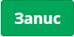
Потребителят може да
се върне в начален екран чрез избор на бутон „Назад“
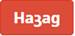
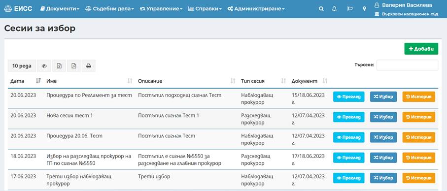
Бутон „Преглед“ – чрез този бутон потребителят може да преглежда и да редактира данните в сесията и да ги запазва отново.
Бутон „Избор“ – чрез избор на бутона, се зарежда нов екран с два основни таба: Таб Списък участници и таб Протоколи.
Бутон „История“ – чрез този бутон, в екран Избор на сесия, потребителят може да прегледа хронология на действията извършвани по съответната сесия.
Въвеждането на съдиите в списъка с участниците, става през бутон Избор . Отваря се нов диалогов прозорец, от където през бутон Добави съдия се отваря екран с текстово поле за избор на съдия от системата. С въвеждане на минимум 3 (три) букви от името на конкретен съдия, се визуализира падащ списък с имена на действащи съдии, регистрирани в системата.
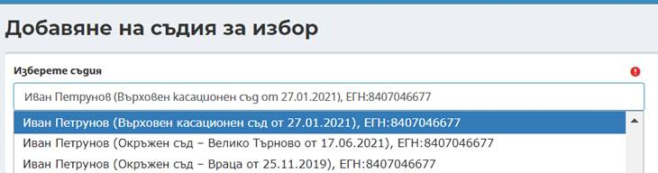
След избор на съдия в полето чрез бутон „Запис“
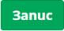
Внимание! След като е добавен съдия в списъка за случаен избор, той не може да бъде изтрит от списъка.
При избор на бутон “Запис“ се визуализира екран разделен на три секции.
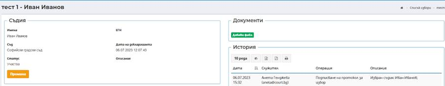
В първата секция „Съдия“ се визуализират основни данни за съдията – Имена, ЕГН, Съд, Статус (Участва/Не участва), Дата и час на добавяне на подадена декларация за писмено съгласие за участие в списъка за случаен избор и Описание.
От този екран потребителят има възможност да промени статуса на съдията, като избере бутон Промяна . Отваря се допълнителен прозорец с данни по промяната на участие.
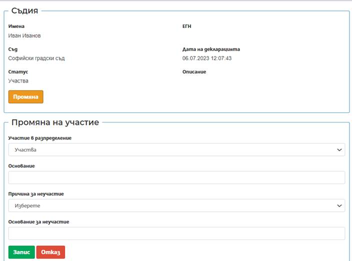
- Участие в разпределение – посредством падащо меню, потребителят избира съответната промяна: Не участва или Техническа грешка.
При избор на опцията „Не участва“, системата задължително изисква въвеждане на причина за изключване от участие.
Опцията „Техническа грешка“ се използва в случай на погрешно избран съдия в списъка с участници. При избор на тази опция, системата не позволява промяна на данните.
- Основание – полето е текстово описание;
- Причини за неучастие – посредством падащо меню се избира: Отвод, Самоотвод, Болничен отпуск.
Внимание! - избор на Участие в разпределение - „Не участва“ и при избор на Причина за неучастие „Отвод“ или „Самоотвод“, съответния съдия няма право да участва в случайното разпределение в тази сесия.
- Основание за неучастие – полето е текстово.
Във втората секция „Документи“ е налична функционалност за прикачване на файл, където може да бъде прикачена Декларация за съгласие, подадена от съответния съдия.
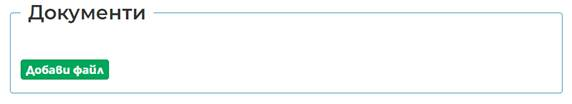
След прикачване на декларацията е необходимо
нейното потвърждение, което става през бутон Декларация
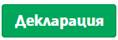
В третата секция „История“ се показва хронологията на извършените потребителски действия, свързани с добавяне на съответния съдия в списъка. Налична е информация в табличен вид с дата на извършено действие, служител извършил действието, вида на извършената операция и описание на извършената операция.
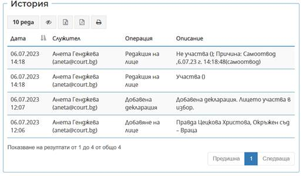
Внимание! Прикачването на декларацията за съгласие в системата не е задължително условие, но потвърждаването на декларация е задължително, за да може конкретния съдия да се визуализира в списъка с участниците за случаен избор.
След въвеждане на всички съдии, които ще
участват в случайния избор, потребителят финализира списъка, чрез бутон
Финализирай списък
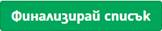
Системата извежда предупредително съобщение:
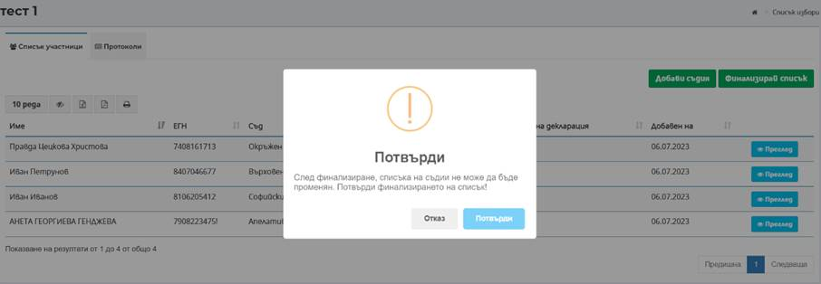
След потвърждаване се генерира окончателния списък с имената на магистратите, които ще участват в случайния избор.
През бутон Случаен избор
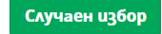
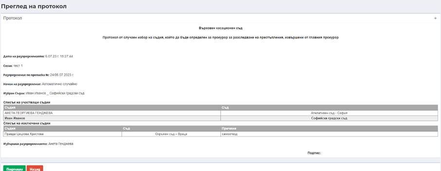
Генерираният протокол се подписва с електронен подпис и може да се прегледа в таб Протоколи през бутон Преглед.
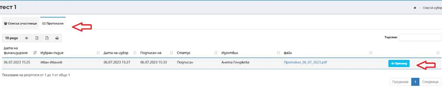